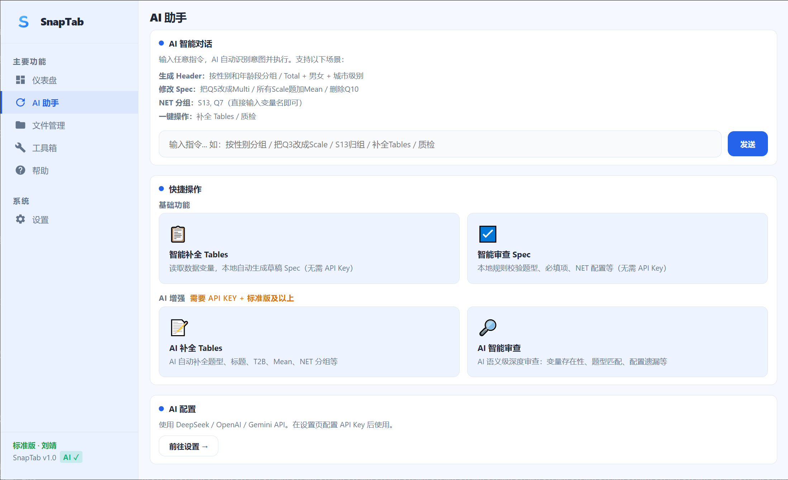

database
SPSS .sav 原生支持
自动读取变量标签、数值标签和题型结构，减少导入前的人工整理。
SnapTab 的重点不是单个“AI 功能点”，而是让调研团队从拿到 `.sav` 开始，到最终交付 Excel 报表结束，全程更稳定、更标准、更可复跑。

这是每个版本都最先被使用的部分，负责把数据、规则和输出链路稳定搭起来。
自动读取变量标签、数值标签和题型结构，减少导入前的人工整理。
先生成第一版 Tables 规格，供团队快速校对、补充和复跑。
在真正跑表前检查常见配置问题，减少后期返工。
AI 在 SnapTab 里不是“替你做全部”，而是把最费时间的起草和审查环节提速。
不是只导出一份“长得像表格”的东西，而是更贴近研究行业常见交付要求。
Z-Test、T-Test、字母标注与展示控制。
支持 Base / Weighted Base 同时呈现。
适合对多重比较有要求的团队。
适配市场研究常见分析口径。

导出质量决定了研究员到底能不能少返工、少解释、少重排版。